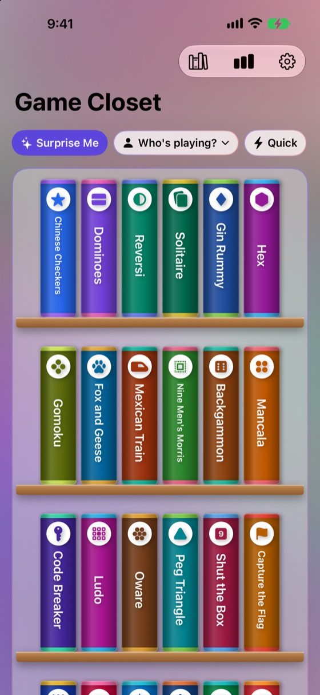
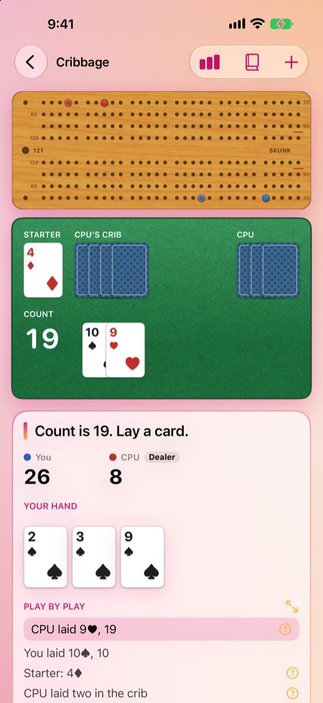
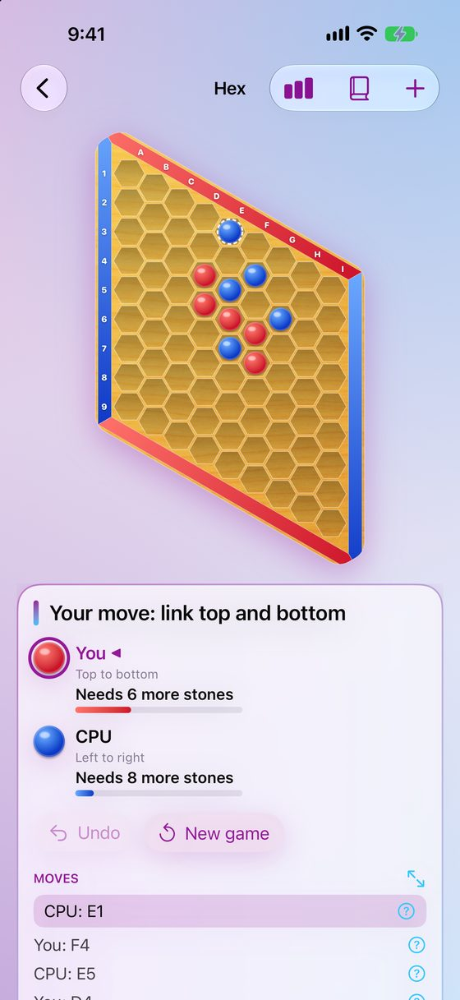

DeeDogDevelopment
Small, friendly apps from Jim Murff.
Small, friendly apps from Jim Murff.
A golf scorecard with yards to the green, every hole on the map, and skins, Nassau and wolf settled at the end. For iPhone, iPhone Duo and iPad.


Two more apps are finished and on their way to the App Store.
The hall closet of old games, opened on your phone: forty-one board, dice and card classics, each with its rules written out and a CPU opponent who plays a fair game. Pass the phone around, or play a friend head to head on two devices in the same room.
Free, with no ads and no account. For iPhone, iPhone Duo, iPad and Mac.



A scorebook without the eraser: baseball and softball pitch by pitch, cricket ball by ball, and basketball, football, soccer and hockey play by play, with a box score for every player and pitch-count warnings for youth baseball.
Scoring is free, with no limit on games. Scorekeeper Pro, a one-time purchase, adds iCloud sync, Share Live, hosting a game to score together on two phones, and more. For iPhone, iPhone Duo, iPad, Mac and Apple Watch.


A few more apps are in the works. Some of them may ship.
A family recipe tree. Every dish keeps its versions, and each one shows what its cook changed, like Mom's chili from Grandma's with less salt and a can of black beans. Scan an old recipe card to start one. For iPhone.
Weather that tells you how today differs from yesterday, instead of a forecast. With widgets and a watch complication. For iPhone and Apple Watch.
A lifetime head-to-head record for anything you play with the same people: ratings, a title belt that changes hands, and a rivalry card to share. Games scored in Scorekeeper come in on their own. For iPhone and Apple Watch.
Pick the dishes and when you want to eat. Oven Time works backward to schedule every step, keeps each oven at one temperature, and walks you through the cooking as it happens. For iPhone and Apple Watch.